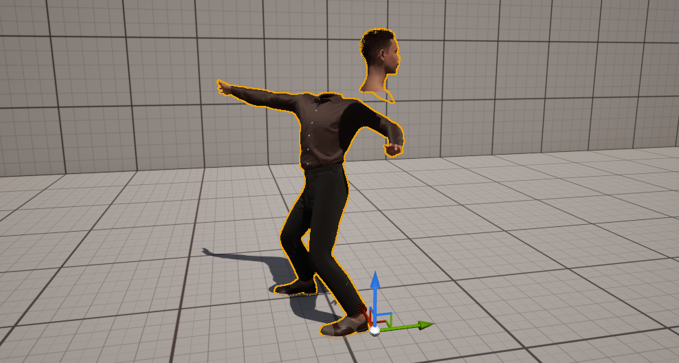
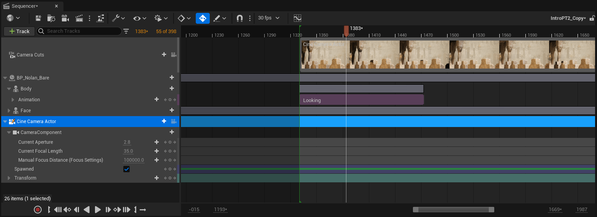
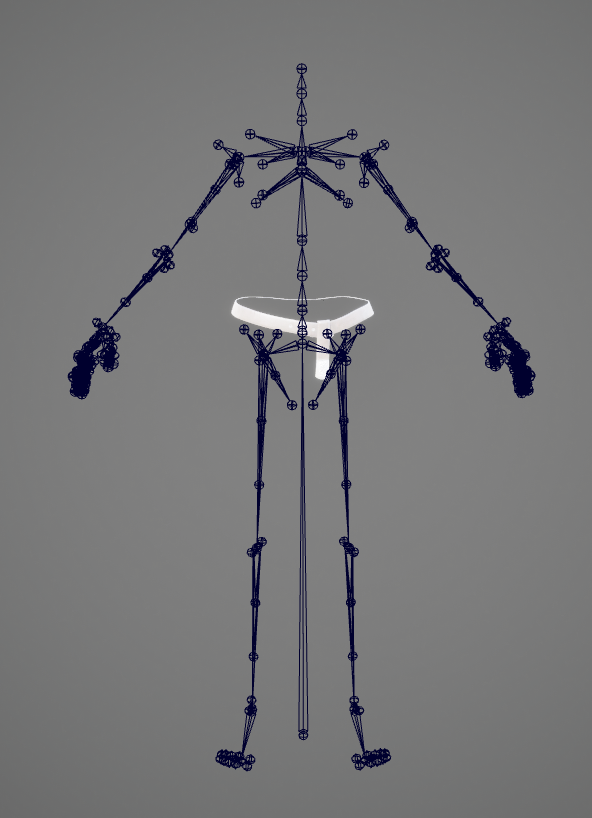
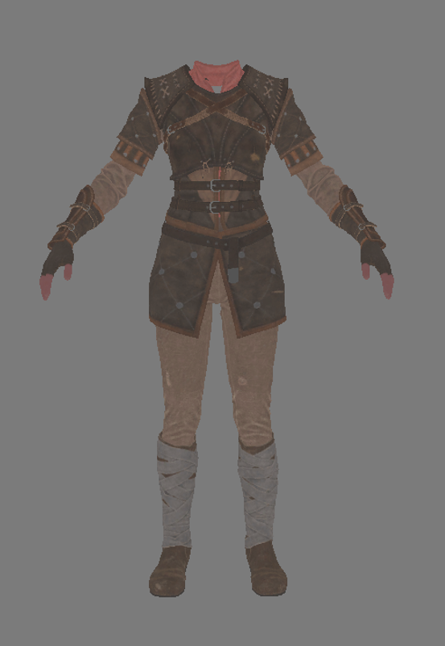

How to use IK Retargeting to apply Mixamo animations to the Metahuman Body rig.
Use mocap data captures with the Live Link Face app to animate a Metahuman facial rig.

Combine Metahuman Face and Body animation in Sequencer.

A brief overview of Unreal Skeletons and IK Rigs.

Out of the box, Metahuman bodies have very few customization options. I am currently exploring how to create custom clothing for Metahumans and will create a guide for doing so once I have found a suitable workflow. For more information, check out the Current Research page.